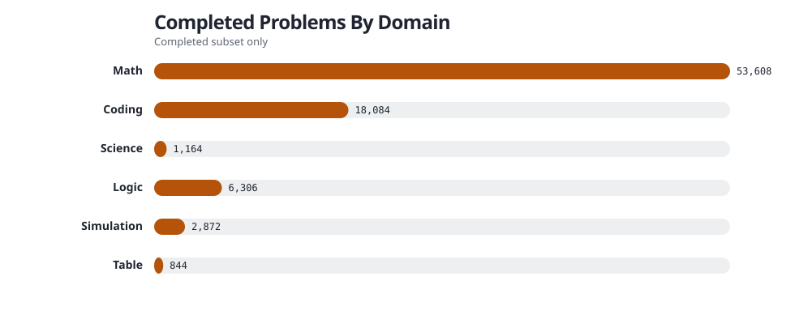
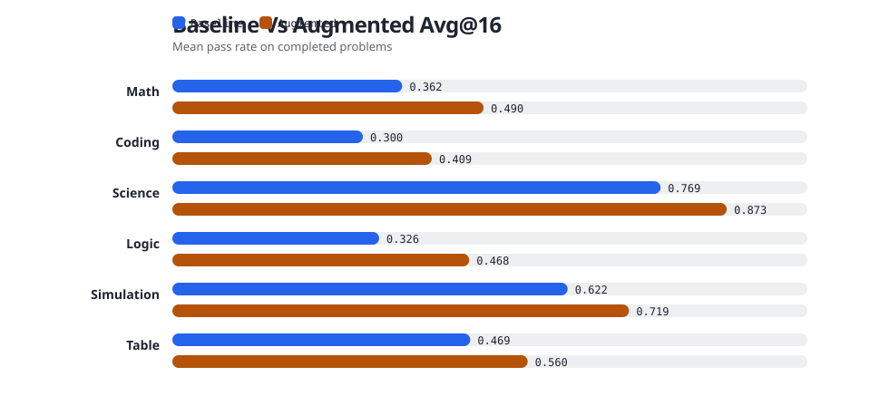
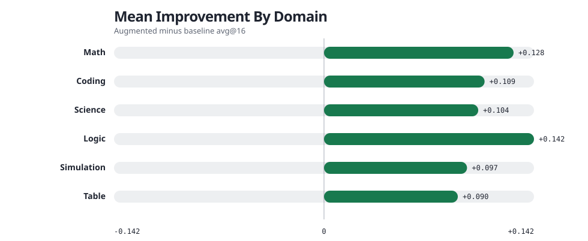

Memgen Guru Summary
/mnt/weka/home/seungwook.han/memory/results/guru_20260420_full_vllm_minimax_m27_feedback



| Domain | Completed | Baseline | Augmented | Improvement | Helped | Hurt | Unchanged |
|---|---|---|---|---|---|---|---|
| Math | 53,608 | 0.3620 | 0.4901 | +0.1281 | 34552 | 1993 | 17063 |
| Coding | 18,084 | 0.3000 | 0.4085 | +0.1085 | 11542 | 598 | 5944 |
| Science | 1,164 | 0.7688 | 0.8731 | +0.1042 | 965 | 34 | 165 |
| Logic | 6,306 | 0.3256 | 0.4675 | +0.1419 | 4475 | 231 | 1600 |
| Simulation | 2,872 | 0.6225 | 0.7191 | +0.0966 | 1830 | 31 | 1011 |
| Table | 844 | 0.4691 | 0.5595 | +0.0904 | 426 | 26 | 392 |
53,608 completed, baseline 0.3620, augmented 0.4901, improvement +0.1281
My three-digit code is 023. Reckha can't choose a code that is the same as mine in two or more of the three digit-positions, nor that is the same as mine except for switching the positions of two digits (so 320 and 203, for example, are forbidden, but 302 is fine). Reckha can otherwise choose any three-digit code where each digit is in the set $\{0, 1, 2, ..., 9\}$. How many codes are available for Reckha? Please output the final answer within \boxed{}.
Ground Truth / Verifier: 969
No memory items stored for this example.
These evaluation generations were not persisted in the current feedback-loop artifact schema for this run.
These evaluation generations were not persisted in the current feedback-loop artifact schema for this run.
The function $f$ , defined on the set of ordered pairs of positive integers, satisfies the following properties: \[f(x, x) = x,\; f(x, y) = f(y, x), {\rm \ and\ } (x+y)f(x, y) = yf(x, x+y).\] Calculate $f(14,52)$ . Please output the final answer within \boxed{}.
Ground Truth / Verifier: 364
When a functional equation is symmetric and has a trivial diagonal condition, compute f(1,n) from the recursion; the pattern (here f(1,n)=n) suggests the function behaves like the identity or a known arithmetic function. Checking the first few values against the functional equation quickly eliminates candidates such as gcd and isolates lcm.
Because the functional equation is homogeneous in the common divisor, one obtains f(d a, d b) = d·F(a,b) for a new function F defined on coprime pairs. The equation then becomes (a+b)F(a,b) = b F(a, a+b), which is exactly the original form but now with gcd(a,b)=1. This reduction isolates the core structure and makes the solution obvious (here F(a,b)=a·b, i.e., the lcm).
Substituting f = R·lcm into the functional equation and using the known identity lcm(x, x+y) = (x+y)/y·lcm(x,y) yields R(x,y) = R(x, x+y). By symmetry R is also invariant under swapping and under adding the other argument. Consequently R is constant on each equivalence class generated by these moves, and by the diagonal condition R(d,d)=1. Hence R≡1 and f(x,y)=lcm(x,y) is forced.
The derived recurrence mirrors the Euclidean reduction of a pair (a,b) to (b, a−b). Starting from any (x,y) and repeatedly applying the recurrence reduces the pair to (d,d) where d = gcd(x,y). Since the base case gives f(d,d)=d, the product of all the scaling factors telescopes to xy/gcd(x,y), i.e., lcm(x,y). This provides an alternative proof of uniqueness.
The identity (x+y)·lcm(x,y) = y·lcm(x, x+y) follows from the definition of lcm and the well‑known property gcd(x,y)=gcd(x,x+y). Recognizing this match instantly shows that the lcm satisfies all three given conditions, confirming it as the solution.
These evaluation generations were not persisted in the current feedback-loop artifact schema for this run.
These evaluation generations were not persisted in the current feedback-loop artifact schema for this run.
Regular octagon $A_1A_2A_3A_4A_5A_6A_7A_8$ is inscribed in a circle of area $1.$ Point $P$ lies inside the circle so that the region bounded by $\overline{PA_1},\overline{PA_2},$ and the minor arc $\widehat{A_1A_2}$ of the circle has area $\tfrac{1}{7},$ while the region bounded by $\overline{PA_3},\overline{PA_4},$ and the minor arc $\widehat{A_3A_4}$ of the circle has area $\tfrac{1}{9}.$ There is a positive integer $n$ such that the area of the region bounded by $\overline{PA_6},\overline{PA_7},$ and the minor arc $\widehat{A_6A_7}$ of the circle is equal to $\tfrac{1}{8}-\tfrac{\sqrt2}{n}.$ Find $n.$ Please output the final answer within \boxed{}.
Ground Truth / Verifier: 504
No memory items stored for this example.
These evaluation generations were not persisted in the current feedback-loop artifact schema for this run.
These evaluation generations were not persisted in the current feedback-loop artifact schema for this run.
A point $P$ is chosen uniformly at random in the interior of triangle $ABC$ with side lengths $AB = 5$ , $BC = 12$ , $CA = 13$ . The probability that a circle with radius $\frac13$ centered at $P$ does not intersect the perimeter of $ABC$ can be written as $\frac{m}{n}$ where $m, n$ are relatively prime positive integers. Find $m + n$ . Please output the final answer within \boxed{}.
Ground Truth / Verifier: 61
The scaling factor of the inner triangle is the ratio of the new inradius to the original inradius: (R – d)/R, where R is the triangle’s inradius. Consequently the area scales by the square of that factor: A′ = A·((R – d)/R)².
The probability is ((R – d)/R)², provided d < R; otherwise it is zero. This follows directly from the area‑ratio of the similar inner triangle.
For a right triangle with legs a and b, the inradius simplifies to R = (a + b – c)/2, where c is the hypotenuse. In the 5‑12‑13 triangle, R = 2, so an offset of d = 1/3 leaves a non‑empty inner triangle.
Here we need points whose perpendicular distance to each side is at least d, which yields a pure triangular region with no circular arcs. Using the wrong formula would incorrectly subtract πd² and give a wrong probability.
Rather than computing side‑length reductions directly, use the homothety centred at the incenter: the new inradius is R – d, giving the same scaling factor for all sides, and thus the same area ratio.
These evaluation generations were not persisted in the current feedback-loop artifact schema for this run.
These evaluation generations were not persisted in the current feedback-loop artifact schema for this run.
Triangle $\triangle ABC$ has $AB = 8$, $AC = 10$, and $AD = \sqrt{33}$, where $D$ is the midpoint of $BC$. Perpendiculars are drawn from $D$ to meet $AB$ and $AC$ at $E$ and $F$, respectively. The length of $EF$ can be expressed as $\frac{a\sqrt{b}}{c}$, where $a, c$ are relatively prime and $b$ is square-free. Compute $a + b + c$. Please output the final answer within \boxed{}.
Ground Truth / Verifier: 33
Apollonius (or Stewart) gives the relation m_a^2 = (2b^2+2c^2−a^2)/4. Solving for a yields the missing side length, which is essential before placing coordinates.
In the triangle, set AB on the x‑axis and A at the origin. This makes the equation of that side trivial (y=0) and the foot of a perpendicular from any point is just a vertical or horizontal projection, simplifying the projection step.
<title>Find foot of perpendicular via
These evaluation generations were not persisted in the current feedback-loop artifact schema for this run.
These evaluation generations were not persisted in the current feedback-loop artifact schema for this run.
18,084 completed, baseline 0.3000, augmented 0.4085, improvement +0.1085
Sereja has got an array, consisting of n integers, a1, a2, ..., an. Sereja is an active boy, so he is now going to complete m operations. Each operation will have one of the three forms: 1. Make vi-th array element equal to xi. In other words, perform the assignment avi = xi. 2. Increase each array element by yi. In other words, perform n assignments ai = ai + yi (1 ≤ i ≤ n). 3. Take a piece of paper and write out the qi-th array element. That is, the element aqi. Help Sereja, complete all his operations. Input The first line contains integers n, m (1 ≤ n, m ≤ 105). The second line contains n space-separated integers a1, a2, ..., an (1 ≤ ai ≤ 109) — the original array. Next m lines describe operations, the i-th line describes the i-th operation. The first number in the i-th line is integer ti (1 ≤ ti ≤ 3) that represents the operation type. If ti = 1, then it is followed by two integers vi and xi, (1 ≤ vi ≤ n, 1 ≤ xi ≤ 109). If ti = 2, then it is followed by integer yi (1 ≤ yi ≤ 104). And if ti = 3, then it is followed by integer qi (1 ≤ qi ≤ n). Output For each third type operation print value aqi. Print the values in the order, in which the corresponding queries follow in the input. Examples Input 10 11 1 2 3 4 5 6 7 8 9 10 3 2 3 9 2 10 3 1 3 10 1 1 10 2 10 2 10 3 1 3 10 3 9 Output 2 9 11 20 30 40 39 The input will be given via stdin and the output should be printed to stdout by your code. Now solve the problem by providing the code.
Ground Truth / Verifier: {"inputs": ["6 6\n202714501 613423725 367325359 862808465 182588146 745008828\n2 492\n2 1943\n1 3 173984392\n1 3 9356383\n3 4\n1 5 472683539\n", "4 4\n529316834 995684640 949078705 317773978\n3 3\n3 1\n2 6271\n1 1 856879574\n", "6 6\n202714501 613423725 476264789 862808465 139985514 68990276\n2 492\n2 1943\n1 3 173984392\n1 3 9356383\n3 4\n1 5 472683539\n", "6 5\n545129895 918519812 2334334 565540665 96179148 904102869\n3 3\n1 2 641196860\n2 779\n2 3849\n3 1\n", "4 4\n1227961266 995684640 1830027497 63411296\n3 3\n3 1\n2 6271\n1 1 1142657921\n", "5 4\n293170637 715384768 756975575 129004053 875201151\n1 3 695181967\n3 3\n2 2288\n1 5 332270946\n", "5 5\n191500398 1070590027 761775891 250070766 491215007\n1 4 780579549\n1 4 638546757\n3 4\n1 3 54995349\n2 6119\n", "5 5\n384298629 724763447 1129395653 215352371 491215007\n1 5 29514562\n1 4 638546757\n3 4\n1 1 17368169\n2 6119\n"], "outputs": ["862810900\n", "949078705\n529316834\n", "862810900\n\n", "2334334\n545134523\n\n", "1830027497\n1227961266\n\n", "695181967\n", "638546757\n\n", "638546757\n\n"]}
No memory items stored for this example.
These evaluation generations were not persisted in the current feedback-loop artifact schema for this run.
These evaluation generations were not persisted in the current feedback-loop artifact schema for this run.
You are given n segments on the coordinate axis Ox and the number k. The point is satisfied if it belongs to at least k segments. Find the smallest (by the number of segments) set of segments on the coordinate axis Ox which contains all satisfied points and no others. Input The first line contains two integers n and k (1 ≤ k ≤ n ≤ 106) — the number of segments and the value of k. The next n lines contain two integers li, ri ( - 109 ≤ li ≤ ri ≤ 109) each — the endpoints of the i-th segment. The segments can degenerate and intersect each other. The segments are given in arbitrary order. Output First line contains integer m — the smallest number of segments. Next m lines contain two integers aj, bj (aj ≤ bj) — the ends of j-th segment in the answer. The segments should be listed in the order from left to right. Examples Input 3 2 0 5 -3 2 3 8 Output 2 0 2 3 5 Input 3 2 0 5 -3 3 3 8 Output 1 0 5 The input will be given via stdin and the output should be printed to stdout by your code. Now solve the problem by providing the code.
Ground Truth / Verifier: {"inputs": ["10 1\n5 60\n-73 -37\n59 69\n-56 1\n-84 -24\n-14 46\n-65 -23\n-66 -57\n-87 -80\n-21 20\n", "10 17\n-92 87\n-100 -67\n-88 80\n-82 -59\n-72 81\n-50 30\n30 77\n1 92\n-76 -60\n-29 -13\n", "3 2\n0 5\n-3 6\n1 1\n", "10 8\n-749560329 759073394\n-186423470 816422576\n-674251064 742056817\n-245532239 954589677\n-306243234 999298121\n-558995335 409818446\n-885248428 624359061\n-936960294 754851875\n-781500924 984124751\n-342740564 192927468\n", "2 2\n-1000000000 1000000000\n-1000000000 100\n", "10 2\n27 96\n-22 23\n-68 26\n46 69\n-91 86\n12 73\n-139 76\n-11 33\n17 47\n-57 78\n", "1 1\n-870080964 571991746\n", "10 8\n-749560329 759073394\n-186423470 816422576\n-674251064 742056817\n-245532239 954589677\n-306243234 999298121\n-448636479 409818446\n-885248428 624359061\n-936960294 754851875\n-781500924 984124751\n-342740564 618223559\n"], "outputs": ["1\n-87 69\n", "0\n", "1\n0 5\n", "1\n-306243234 624359061\n", "1\n-1000000000 100\n", "1\n-91 86\n", "1\n-870080964 571991746\n", "1\n-306243234 624359061\n"]}
Processing starts first guarantees that a point which is both the end of one interval and the start of another is counted for both intervals, because the interval that ends at the point is still active when the point is evaluated. This ordering also correctly handles degenerate (point) intervals, where the start and end occur at the same coordinate, by giving the +1 before the –1 so the point is covered.
Because the sweep records coverage for the open interval after the left endpoint, the right endpoint of the piece is exclusive. Subtracting one from the right coordinate (or using the next event point minus one) converts the representation to the inclusive form required by the problem. This step is essential when the original input intervals are closed on both ends.
Two intervals that share an endpoint belong to the same connected component of the satisfied set, so they can be combined into a single interval without introducing extra points. Merging on ≤ (instead of <) ensures that touching intervals are collapsed, reducing the number of output segments to the theoretical minimum.
During the sweep, an isolated point appears when the coverage becomes ≥ k after processing start events at a coordinate, but drops below k after processing the end events at the same coordinate. The algorithm should start an interval at that coordinate and close it immediately, producing a degenerate segment. This guarantees that no satisfied point is omitted from the answer.
Opening after the start events ensures the left endpoint is included; closing after the end events ensures the right endpoint is also included. This timing prevents off‑by‑one errors that arise from closing the interval before the end point is processed.
Two million events fit comfortably in memory when stored as simple tuples, and a single sort dominates the O(n log n) runtime. Fast I/O avoids bottlenecks when reading and writing large data sets, which is critical for the 10⁶‑size input.
These evaluation generations were not persisted in the current feedback-loop artifact schema for this run.
These evaluation generations were not persisted in the current feedback-loop artifact schema for this run.
Recently Luba bought a monitor. Monitor is a rectangular matrix of size n × m. But then she started to notice that some pixels cease to work properly. Luba thinks that the monitor will become broken the first moment when it contains a square k × k consisting entirely of broken pixels. She knows that q pixels are already broken, and for each of them she knows the moment when it stopped working. Help Luba to determine when the monitor became broken (or tell that it's still not broken even after all q pixels stopped working). -----Input----- The first line contains four integer numbers n, m, k, q (1 ≤ n, m ≤ 500, 1 ≤ k ≤ min(n, m), 0 ≤ q ≤ n·m) — the length and width of the monitor, the size of a rectangle such that the monitor is broken if there is a broken rectangle with this size, and the number of broken pixels. Each of next q lines contain three integer numbers x_{i}, y_{i}, t_{i} (1 ≤ x_{i} ≤ n, 1 ≤ y_{i} ≤ m, 0 ≤ t_{ ≤ 10}^9) — coordinates of i-th broken pixel (its row and column in matrix) and the moment it stopped working. Each pixel is listed at most once. We consider that pixel is already broken at moment t_{i}. -----Output----- Print one number — the minimum moment the monitor became broken, or "-1" if it's still not broken after these q pixels stopped working. -----Examples----- Input 2 3 2 5 2 1 8 2 2 8 1 2 1 1 3 4 2 3 2 Output 8 Input 3 3 2 5 1 2 2 2 2 1 2 3 5 3 2 10 2 1 100 Output -1
Ground Truth / Verifier: {"inputs": ["3 4 2 9\n3 3 8\n1 1 5\n1 2 4\n3 1 2\n1 4 7\n3 4 1\n2 4 0\n2 3 6\n1 3 3\n", "500 500 1 0\n", "4 2 1 4\n4 2 3\n2 2 0\n4 1 2\n1 1 1\n", "29 50 5 29\n21 42 1565821\n21 43 53275635\n21 44 2717830\n21 45 9579585\n21 46 20725775\n22 42 2568372\n22 43 9584662\n22 44 31411635\n22 45 5089311\n22 46 4960702\n23 42 11362237\n23 43 42200296\n23 44 18762146\n23 45 8553819\n23 46 4819516\n24 42 10226552\n24 43 21022685\n24 44 32940182\n24 45 39208099\n24 46 3119232\n25 42 8418247\n25 43 4093694\n25 44 9162006\n25 45 328637\n25 46 13121717\n6 21 3147344\n28 26 12445148\n5 7 925220\n25 35 170187\n", "1 1 1 0\n", "1 1 1 1\n1 1 228\n", "2 3 2 5\n2 1 8\n2 2 8\n1 2 1\n1 3 4\n2 3 2\n", "4 5 2 20\n1 2 3\n1 3 8\n4 3 6\n4 5 2\n2 2 15\n1 5 14\n3 5 10\n1 4 16\n2 3 7\n2 4 17\n2 5 1\n1 1 12\n3 4 19\n2 1 13\n3 2 18\n4 2 11\n4 1 4\n3 3 9\n3 1 0\n4 4 5\n"], "outputs": ["7\n", "-1\n", "0\n", "53275635\n", "-1\n", "228\n", "8\n", "15\n"]}
For problems where a condition becomes true at some moment T and remains true afterwards, binary search over the time values (or integer range) with a decision function that checks the condition at a given time reduces the search to O(log T) steps. The decision function typically involves a data structure that can answer the condition in O(1) or O(n·m).
After converting a matrix to a binary matrix (1 if condition met, 0 otherwise), a 2D prefix sum allows O(1) query of the sum in any k×k window. This turns the problem of checking existence of a fully covered subgrid into a simple loop over all possible top‑left corners.
When some cells never break, treat their break time as infinity (or a very large number). This ensures that any subgrid containing such a cell will never be fully broken, simplifying the logic.
First, compute the maximum in each row for every horizontal k‑length window, resulting in a matrix of size n×(m−k+1). Then, apply a vertical sliding window maximum on this matrix to obtain the maximum in every k×k subgrid in O(n·m) time.
If there are no broken pixels, the answer is -1. If k=1, the answer is the minimum break time among all pixels (or -1 if none). When n=k or m=k, there is only one possible subgrid to check.
For n,m ≤ 500, both O((n·m) log q) and O(n·m) are feasible. Binary search is simpler to implement if the decision function is easy, while a direct sliding‑window approach avoids logarithmic factors.
These evaluation generations were not persisted in the current feedback-loop artifact schema for this run.
These evaluation generations were not persisted in the current feedback-loop artifact schema for this run.
This is another problem about Indraneel's library. His library has one long shelf. His books are numbered and he identifies the books by their number. Each book has a distinct number. He has lost many books, since many of his friends borrow his books and never bother to return them. He does not want to lose any more books and has decided to keep a record of all books that he lends to his friends. To make the task of borrowing a book a little difficult, he has given the following instructions to his friends: when they borrow a book, they must record in a register its position from the left among the books currently on the shelf. Suppose there are $5$ books in the library and they are arranged as follows: 261421532614215326 \quad 1 \quad 42 \quad 15 \quad 3 If someone walks in and borrows the book $42$, then he will record $3$ in the register because this book is the third from the left on the shelf. Now the shelf looks like this: 26115326115326 \quad 1 \quad 15 \quad 3 If the next person borrow the book $3$, he writes down $4$ in the register since this is currently the fourth book from the left on the shelf, and so on. Indraneel knows the initial arrangement of the books in his library at the time that he introduced the register system. After a while he examines his register and would like to know which books have been borrowed. Your task is to write a program to help Indraneel solve this problem. -----Input:----- The first line of the input contains a single integer $M$ indicating the number of books in Indraneel's library. The next line contains $M$ distinct positive integers describing the sequence in which the books are arranged on the library shelf. The third line of input contains a single integer $N$ indicating the number of entries in the register. This, in turn, is followed by $N$ lines (lines $4$ to $N+3$), each containing one positive integer. The integer on line $3+i$ indicates the position from left of the book ith book borrowed. (You may assume that the number on line $3+i$ is at most $M-i+1$.) -----Output:----- $N$ lines with one positive integer on each line. The number on line $i$ is the book borrowed by the ith borrower. -----Constraints:--…
Ground Truth / Verifier: {"inputs": ["5\n26 1 42 15 3\n2\n3\n4"], "outputs": ["42\n3"]}
A BIT supports `add(pos, Δ)` to mark an element as removed and `prefix_sum(pos)` to count how many elements are left up to a given index. By binary lifting on the tree we can locate the smallest index whose prefix sum reaches a given rank `k` in `O(log M)` time, which solves the “k‑th remaining element” query needed for each register entry.
For an array where every entry is `1`, the BIT node `tree[i]` equals `i & -i` (the length of the interval it represents). Filling `tree[i] = i & -i` for all `i` yields a correct BIT without performing `M` point updates, reducing the build phase to linear time.
Starting with `idx = 0` and the highest power of two ≤ `M`, the algorithm checks whether moving that far forward would keep the sum below `k`. If so, it jumps forward and subtracts the skipped sum from `k`. After processing all bits, `idx + 1` is the position of the k‑th present element. This runs in `O(log M)` and works even after deletions because the BIT always reflects the current counts.
Convert the byte string to integers with `map(int, …)` or by iterating over the split list. This approach is significantly faster than line‑by‑line reading and is essential when dealing with the maximum constraints of the problem.
These evaluation generations were not persisted in the current feedback-loop artifact schema for this run.
These evaluation generations were not persisted in the current feedback-loop artifact schema for this run.
# Task You are given a function that should insert an asterisk (`*`) between every pair of **even digits** in the given input, and return it as a string. If the input is a sequence, concat the elements first as a string. ## Input The input can be an integer, a string of digits or a sequence containing integers only. ## Output Return a string. ## Examples ``` 5312708 --> "531270*8" "0000" --> "0*0*0*0" [1, 4, 64] --> "14*6*4" ``` Have fun! You will use the following starter code to write the solution to the problem and enclose your code within ```python delimiters. ```python def asterisc_it(n): ```
Ground Truth / Verifier: {"functional": "_inputs = [[5312708], [9682135], [2222], [1111], [9999], ['0000'], [8], [2], [0], [[1, 4, 64, 68, 67, 23, 1]]]\n_outputs = [['531270*8'], ['96*8*2135'], ['2*2*2*2'], ['1111'], ['9999'], ['0*0*0*0'], ['8'], ['2'], ['0'], ['14*6*4*6*8*67231']]\nimport math\ndef _deep_eq(a, b, tol=1e-5):\n if isinstance(a, float) or isinstance(b, float):\n return math.isclose(a, b, rel_tol=tol, abs_tol=tol)\n if isinstance(a, (list, tuple)):\n if len(a) != len(b): return False\n return all(_deep_eq(x, y, tol) for x, y in zip(a, b))\n return a == b\n\nfor i, o in zip(_inputs, _outputs):\n assert _deep_eq(asterisc_it(*i), o[0])"}
...
These evaluation generations were not persisted in the current feedback-loop artifact schema for this run.
These evaluation generations were not persisted in the current feedback-loop artifact schema for this run.
1,164 completed, baseline 0.7688, augmented 0.8731, improvement +0.1042
You are a knowledgeable assistant. Answer the following questions and think step by step. Please output the final answer within \boxed{}. Suppose the planet Mars has an electric field similar to Earth's, producing a net electric flux of {eq}-363 \times 10^{16} Nm^2/C {/eq} at the planet's surface. Calculate the electric field at the surface of Mars.
Ground Truth / Verifier: -2.51e4 N/C
When a problem gives the total flux through a spherical body and asks for the surface electric field, apply Gauss’s law as Φ = E·(4πR²). This yields E = Φ/(4πR²) directly. Confusing the sphere’s surface area with a cross‑sectional area leads to an error of a factor of 4.
Verify that the radius used in the area calculation is the actual radius of the body in question (e.g., Mars ≈ 3.4 × 10⁶ m). Plugging in Earth’s radius instead of Mars’ inflates or deflates the result by the square of the ratio of the radii, giving a completely wrong magnitude.
A negative total flux indicates that electric‑field lines are directed toward the planet’s centre (inward), while a positive flux indicates outward direction. When a vector answer is expected, attach the appropriate direction to the magnitude based on the sign of Φ.
Because E = Φ/(4πR²) follows directly from Gauss’s law for a sphere, avoid the detour of computing Q = ε₀Φ and then applying Coulomb’s law, unless the charge is explicitly required. This shorter path minimizes intermediate rounding and makes the derivation easier to check.
Flux is given in N·m²/C (≡ V·m) and radius in meters, so the resulting field will be in N/C (≡ V/m). Verifying that units cancel correctly (e.g., Φ in N·m²/C divided by m² yields N/C) provides a quick sanity check on the algebra.
These evaluation generations were not persisted in the current feedback-loop artifact schema for this run.
These evaluation generations were not persisted in the current feedback-loop artifact schema for this run.
You are a knowledgeable assistant. Answer the following questions and think step by step. Please output the final answer within \boxed{}. Three point charges lie in a straight line along the y-axis. A charge of q1 = -9.80 {eq}\mu {/eq} C is at y = 6.00 m, and a charge of q2 = -8.20 {eq}\mu {/eq} C is at y = -4.10 m. The net electric force on the third point charge is zero. Where is this charge located?
Ground Truth / Verifier: 0.725m
When two fixed charges lie on a line, the forces they exert on a third charge point either toward or away from each charge. Net zero can occur only where the two force vectors are opposite, i.e., typically between two like charges or outside opposite‑sign pairs. Determine this region first; only distances in that region should be used in the magnitude‑equality equation.
In Coulomb’s law the factor k and the test‑charge magnitude are common to both forces. Setting the magnitudes equal and canceling those factors reduces the problem to |q₁|/r₁² = |q₂|/r₂². This eliminates the unknown test‑charge value and makes the algebra focus on the geometry and the given charges.
Taking a square root introduces a ± that can produce extraneous solutions. Substitute each candidate distance back into the original vector‑sum requirement (or check the sign of each term) to verify that the forces truly point in opposite directions. Discard any root that places the charge where both forces would point the same way.
Even if magnitudes are equal, a root that makes the two forces point in the same direction cannot give a net force of zero. Re‑examine the sign of each force (or the sign of the terms in the equation) for each algebraic solution; keep only those that meet the original vector‑sum requirement.
Because the test‑charge value cancels out of the magnitude‑equality condition, the resulting distance ratio depends solely on the magnitudes of the fixed charges (r₁/r₂ = √(|q₁|/|q₂|)). Consequently, any non‑zero test charge—positive or negative—experiences zero net force at that same point.
These evaluation generations were not persisted in the current feedback-loop artifact schema for this run.
These evaluation generations were not persisted in the current feedback-loop artifact schema for this run.
You are a knowledgeable assistant. Answer the following questions and think step by step. Please output the final answer within \boxed{}. A tank in the shape of an inverted right circular cone has height 5 meters and radius 3 meters. It is filled with 2 meters of hot chocolate. Find the work required to empty the tank by pumping the hot chocolate over the top of the tank. The density of hot chocolate is {eq}\delta=1080 \: \displaystyle\frac{kg}{m^3}. {/eq}
Ground Truth / Verifier: 889056π/25 Joules
In pumping problems, measure distance consistently from one reference point (either bottom or top). The distance to pump is always the difference between the pump height and the slice's height. Mixing coordinate systems (e.g., starting from the top for one term and bottom for another) leads to incorrect integrals, as seen in several failed attempts that reversed the distance term (5+y instead of 5−y).
For similar cones, the radius at any height scales linearly with the total height. If the full cone has radius R at height H, then a slice at height y (measured from the apex) has radius r = (R/H)·y. Using this proportional relationship ensures the correct volume element πr²dy. Errors often occur when the linear relationship is inverted or misapplied.
When the problem gives mass density (kg/m³), you must multiply by g to get weight density (N/m³) for the work integral. Failing to include g, or using mass density directly, yields an answer off by a factor of approximately 9.8. The correct integrand is ρg·π(r(y))²·(H−y) dy.
The integration bounds are determined by the fluid's actual extent, not the tank's full dimensions. If fluid occupies height h from the bottom (or equivalently from h' to H from the top), integrate from 0 to h (or h' to H). Integrating over the full tank height when fluid only partially fills it produces extra terms.
Simplify constants (like 9π/25 × 28/3 = 84π/25) before integrating to reduce arithmetic errors and make the integral trivial (just a numeric factor). Many incorrect attempts either miscomputed the simplified factor or failed to notice that ∫y²(H−y) dy = (H³/12) when evaluated at the fluid height, giving a quick sanity check against the final answer.
These evaluation generations were not persisted in the current feedback-loop artifact schema for this run.
These evaluation generations were not persisted in the current feedback-loop artifact schema for this run.
You are a knowledgeable assistant. Answer the following questions and think step by step. Please output the final answer within \boxed{}. A horizontal insulating rod of length 10.5-cm and charge 27 nC is in a plane with a long straight vertical uniform line charge. The linear charge density of the long line charge is {eq}3.0 \times 10^{-7} {/eq} C/m. What is the electric force on the rod if the end closest to the line charge is 2.0 cm away?
Ground Truth / Verifier: 2.544e-3 N
The electric field of an infinite uniform line charge is E = λ/(2π ε₀ r) and points radially away from the line; forces on extended bodies must be found by integrating dF = dq E(r) with the correct 1/r dependence.
These evaluation generations were not persisted in the current feedback-loop artifact schema for this run.
These evaluation generations were not persisted in the current feedback-loop artifact schema for this run.
You are a knowledgeable assistant. Answer the following questions and think step by step. Please output the final answer within \boxed{}. Using the value of Ksp = 6 x 10{eq}^{-51} {/eq} for Ag2S, Ka1= 9.5 x 10{eq}^{-8} {/eq}, Ka2 = 1 x 10{eq}^{-19} {/eq} for H2S, and Kf = 1.1 x 10{eq}^{5} {/eq} for AgCl2{eq}^- {/eq}, calculate the equilibrium constant for the following reaction: {eq}Ag2S(s) + 4Cl^-(aq) + 2{H}^+ = 2AgCl2 ^- (aq) + H2S(aq). {/eq}
Ground Truth / Verifier: 7.6e-15
When a reaction is the sum of several elementary steps, the overall equilibrium constant K_total equals the product of the equilibrium constants of those steps, K_i, each raised to its stoichiometric coefficient if multiplied. If a step is reversed, its K is inverted (1/K). This principle allows calculation of K for complex reactions from known K values of simpler steps.
For a solid that dissolves to give metal ions and an anion, then the anion reacts with H+ to form a weak acid, and the metal ion complexes with a ligand, the overall equilibrium constant is K_sp * (K_f)^{stoichiometric factor} / (K_a1 * K_a2 ...). This approach reduces the problem to multiplying and dividing the given constants according to the reaction stoichiometry.
In Ksp, Kf, Ka, the activity of the solid Ag2S(s) is omitted, so Ksp = [Ag+]^2[S^2-]. Similarly, the activity of H2O(l) is 1 in Ka expressions. This convention lets us directly combine the constants without including terms for pure phases.
These evaluation generations were not persisted in the current feedback-loop artifact schema for this run.
These evaluation generations were not persisted in the current feedback-loop artifact schema for this run.
6,306 completed, baseline 0.3256, augmented 0.4675, improvement +0.1419
Solve the following puzzle to determine the order of the vehicles from left to right. The vehicles are limousine, forklift, trolley, firetruck, hovercraft, sailboat.. The constraints are: 1. The hovercraft is to the right of the trolley 2. The limousine is immediately to the left of the forklift 3. The limousine is to the right of the trolley 4. The limousine is to the right of the hovercraft 5. The trolley is to the left of the firetruck 6. The trolley is to the left of the hovercraft 7. The firetruck is to the left of the sailboat 8. The limousine is immediately to the right of the hovercraft 9. There are 4 birds between the trolley and the forklift . Please put your answer within <answer> and </answer> tags, for example <answer> ['pigeon', 'sparrow', 'quail'] </answer>.
Ground Truth / Verifier: ['trolley', 'firetruck', 'sailboat', 'hovercraft', 'limousine', 'forklift']
No memory items stored for this example.
These evaluation generations were not persisted in the current feedback-loop artifact schema for this run.
These evaluation generations were not persisted in the current feedback-loop artifact schema for this run.
Solve the following puzzle where you are given 3 objects and their attributes like job, nationality etc. The list of attributes and their unique values are: Food: cucumber, mango, radish Hobby: puzzles, singing, traveling Job: accountant, engineer, firefighter Movie-Genre: animation, martial-arts, zombie Nationality: colombian, dutch, indonesian Pet: cat, hamster, hedgehog Sport: badminton, basketball, biathlon. The goal is to determine the correct attribute for each object based on the provided clues. The clues are: Pet:cat == Job:engineer or Pet:cat == Sport:badminton, but not both Movie-Genre:martial-arts and Nationality:indonesian have different parity positions Sport:badminton is not to the right of Movie-Genre:animation Food:radish is not to the right of Job:accountant Hobby:puzzles != Pet:hamster Movie-Genre:martial-arts == Pet:cat or Movie-Genre:martial-arts == Nationality:colombian, but not both Sport:badminton and Food:radish have different parity positions Sport:badminton is not to the left of Hobby:traveling Food:radish == Movie-Genre:animation or Food:radish == Sport:badminton, but not both Job:accountant is on the far left or far right Sport:biathlon is in an even position Pet:hedgehog is somewhere to the right of Movie-Genre:martial-arts Sport:biathlon is on the left of Food:cucumber Food:cucumber and Pet:hamster have different parity positions. Output the grid in the form of a dictionary with keys as header containing a list of the attributes and rows denoting each row of the final grid. Please return the final answer in <answer> </answer> tags, for example <answer> {"header": ["Position", "Nationality", "Job"], "rows": [["1", "british", "plumber"], ["2", "polish", "carpenter"]]} </answer>.
Ground Truth / Verifier: {'header': ['Position', 'Food', 'Hobby', 'Job', 'Movie-Genre', 'Nationality', 'Pet', 'Sport'], 'rows': [['1', 'mango', 'traveling', 'firefighter', 'martial-arts', 'dutch', 'cat', 'badminton'], ['2', 'radish', 'singing', 'engineer', 'animation', 'indonesian', 'hamster', 'biathlon'], ['3', 'cucumber', 'puzzles', 'accountant', 'zombie', 'colombian', 'hedgehog', 'basketball']]}
No memory items stored for this example.
These evaluation generations were not persisted in the current feedback-loop artifact schema for this run.
These evaluation generations were not persisted in the current feedback-loop artifact schema for this run.
Solve the following puzzle to determine the order of the vehicles from left to right. The vehicles are tank, yacht, van, helicopter.. The constraints are: 1. The van is to the right of the yacht 2. The helicopter is to the left of the van 3. The helicopter is immediately to the left of the van 4. The yacht is to the left of the tank 5. The tank is to the right of the yacht 6. There is 1 bird between the helicopter and the tank . Please put your answer within <answer> and </answer> tags, for example <answer> ['pigeon', 'sparrow', 'quail'] </answer>.
Ground Truth / Verifier: ['yacht', 'helicopter', 'van', 'tank']
No memory items stored for this example.
These evaluation generations were not persisted in the current feedback-loop artifact schema for this run.
These evaluation generations were not persisted in the current feedback-loop artifact schema for this run.
Given the following list of predicates: If Joe Perez is ijsixe, then Jesus Morrow is lpepue. Given Gregory Allen is ixkmuw then Matthew Dawson is qqaobh. William Reyes is nvukga implies Robert Salinas is rogus. If Autumn Mooney is ridir, then Amanda Watts is rteil. Given Mark Odom is zteogj then Brianna Oneal is egptea. Given Clinton Blevins is gikoso then Adrienne Gilmore is coes. William Reyes is nvukga is true if Brianna Oneal is egptea. If Sophia Nguyen is vzooma, then Marcus Esparza is upizsa. Given Sophia Nguyen is vzooma then Joseph Carrillo is vaaci. If Joseph Carrillo is vaaci, then Noah Sims is dwufze. If Brian Carter is owmiq, then Katrina Burke is seabe. If Sophia Nguyen is vzooma, then John Thornton is pnoujd. Penny Randall is bpoga implies Joe Perez is ijsixe. Sophia Nguyen is vzooma implies Jennifer Miller is reuque. Given Amanda Watts is rteil then Danielle Padilla is ixibo. If Kimberly Paul is upopam, then Penny Randall is bpoga. Michael Lucero is builin is true if Monique Brown is ksoudc. Given Julia Bullock is azzovu then Clinton Blevins is gikoso. April King is kiexci is true if Steven Anderson is gfaqai. Katrina Burke is seabe implies Robert Hayes is abwu. If Sophia Nguyen is vzooma, then Melvin Hawkins is uvwfu. Sophia Nguyen is vzooma implies Kimberly Paul is upopam. If Noah Sims is dwufze, then Marc Lee is dkeali. Given Michael Lucero is builin then Leah Ferguson is atnji. Given Matthew Dawson is qqaobh then Valerie Good is iwfid. If Sophia Nguyen is vzooma, then Johnathan Singleton is duuako. Brian Carter is owmiq is true if John Thornton is pnoujd. If Melvin Hawkins is uvwfu, then Monique Brown is ksoudc. Julia Bullock is azzovu is true if Jennifer Miller is reuque. Given Marc Lee is dkeali then Brittany Cruz is relmi. If Sophia Nguyen is vzooma, then Mark Odom is zteogj. Lindsey Mann is koseh implies Steven Anderson is gfaqai. If Johnathan Singleton is duuako, then Gregory Allen is ixkmuw. Given April King is kiexci then William Schaefer is axnda. If Sophia Nguyen is vzooma, then Lindsey Mann is koseh. If Marcus Esparza is upizsa, then Autumn Mooney is ridir. If Sophia Nguyen is vzooma, what is the next step to prove that Danielle P…
Ground Truth / Verifier: upizsa
The problem requires the answer to be a single trait enclosed in <answer> tags, with no additional text. Failing to do so (e.g., providing explanations or missing tags) results in an incorrect answer, regardless of the correctness of the reasoning. The correct format is <answer> trait </answer>.
Start with the given premise (e.g., Sophia Nguyen is vzooma). Find an implication where that premise is the antecedent; the consequent is the next step. Continue chaining implications until reaching the target predicate. In this case, the chain is vzooma → upizsa → ridir → rteil → ixibo, so the next step after the premise is the first consequent: upizsa.
The problem asks for "the trait of the next step", meaning the predicate name (e.g., upizsa) rather than the full sentence (e.g., Marcus Esparza is upizsa). Therefore, output only the predicate string.
These evaluation generations were not persisted in the current feedback-loop artifact schema for this run.
These evaluation generations were not persisted in the current feedback-loop artifact schema for this run.
Given the following list of predicates: If Peter Harris is ormfu, then Mrs. Christine Silva is gxoboi. If Lisa Neal is toodo, then Janet Murillo is guep. Given Anthony Hill is vvocma then Lisa Neal is toodo. Peter Harris is ormfu is true if Anthony Hill is vvocma. Given Rebecca Bennett is ohjqa then Daniel Haley is ilfa. Rachael Baker is uzufu implies Christopher Lamb is avqio. Lucas Parker is cuatoa is true if William Nguyen is kublua. If Anthony Hill is vvocma, then William Nguyen is kublua. Given Anthony Hill is vvocma then Jonathan Tanner is ksoup. Yesenia Martinez is aghru is true if Stephen Rice is diuke. Raymond Curtis is juaiga is true if Suzanne Perkins is pufjo. Rachael Baker is uzufu is true if Monica Melton is fusafu. Given Patricia Wilson is qxeke then Rebecca Bennett is ohjqa. Jaclyn Rivera is tzaig implies Jonathan Johnson is itdqeh. Wanda Mckinney is ogihq is true if Jeffrey Valencia is fuyqa. If Wanda Mckinney is ogihq, then Tina Rodriguez is fwijo. If Anthony Hill is vvocma, then Patricia Wilson is qxeke. Anthony Hill is vvocma implies Shannon Garcia is awupiu. If Jonathan Johnson is itdqeh, then Mrs. Jennifer Middleton MD is kviuz. Tiffany Lindsey is atam is true if Lucas Parker is cuatoa. If Shannon Garcia is awupiu, then Suzanne Perkins is pufjo. If Jonathan Tanner is ksoup, then Stephen Rice is diuke. Anthony Hill is vvocma implies Jaclyn Rivera is tzaig. Anthony Hill is vvocma implies Monica Melton is fusafu. Anthony Hill is vvocma implies Jeffrey Valencia is fuyqa. If Janet Murillo is guep, then Margaret Moreno is mioyos. Carolyn Martinez is anay is true if Mrs. Christine Silva is gxoboi. If Anthony Hill is vvocma, what is the next step to prove that Tiffany Lindsey is atam? Respond with only the trait of the next step. Please put your answer within <answer> and </answer> tags, for example <answer> fdebme </answer>.
Ground Truth / Verifier: kublua
No memory items stored for this example.
These evaluation generations were not persisted in the current feedback-loop artifact schema for this run.
These evaluation generations were not persisted in the current feedback-loop artifact schema for this run.
2,872 completed, baseline 0.6225, augmented 0.7191, improvement +0.0966
You are given a question that requires some input and output variables as follows: In a multi-threaded environment, there is a shared space that can be accessed by both readers and writers. Readers can access the shared space simultaneously, but writers require exclusive access. Given a queue of objects representing threads that are requesting access to the shared space, how should the access be granted to ensure that writers do not starve and readers can access the shared space when no writers are waiting? Specifically, what is the final state of the queue after processing the access requests, considering the priority of readers and the current number of active writers and readers? The input and output requirements are as follows: Input: `queue` (list of dictionaries): A list of dictionaries where each dictionary represents an object with keys `id` (int) and `type` (bool). `id` is the identifier of the object, and `type` is `False` for readers and `True` for writers. `n_writers` (int): The number of current writers accessing the shared space. `n_readers` (int): The number of current readers accessing the shared space. Output: `return` (list of dictionaries): A list of dictionaries where each dictionary represents an object with keys `id` (int), `type` (bool), and `priority` (bool). `id` is the identifier of the object, `type` is `False` for readers and `True` for writers, and `priority` indicates whether the reader has priority to access the shared space. Given the following input: {"queue": [{"id": 0, "type": false}], "n_writers": 1, "n_readers": 3} Can you predict the output without writing any code? Please reason and put your final answer in the following json format: ```json { "output": <your output> } ``` where <your output> should strictly match the the output requirement as specified. Put your final answer in the ```json``` tags. Tip: Here is a reference code snippet for this question. You can refer to this code tov guide your reasoning but not copy spans of code directly. # import necessary packages import threading import random # all class and function definitions in the code file, if any class Object: def __init__(self, id, type)…
Ground Truth / Verifier: "output": [{"id": 0, "type": false, "priority": false}]
Maintain `n_writers` and `n_readers` to represent the shared space’s occupancy. All subsequent access decisions are based solely on these counters, making the logic simple and stateless.
For a reader: `n_writers == 0` and (priority flag true or no writer in queue). For a writer: `n_writers == 0 and n_readers == 0`. If the condition fails, the request stays in the queue.
Upon granting a writer, iterate the queue and set `priority = True` for every reader. The flag is read on later reader decisions, enabling a simple starvation‑avoidance mechanism.
These evaluation generations were not persisted in the current feedback-loop artifact schema for this run.
These evaluation generations were not persisted in the current feedback-loop artifact schema for this run.
You are given a question that requires some input and output variables as follows: In a game of Nim, there are several heaps of counters. Each player takes turns removing any number of counters from any single heap. The player who removes the last counter wins the game. Given the sizes of the heaps, what is the optimal number of counters to remove from a specific heap in the first turn to ensure a win, or should the player concede the game? The input and output requirements are as follows: Input: `heaps` (list of integers): A list of integers representing the sizes of the heaps in the game of Nim. Output: `return` (dictionary): A dictionary with the following keys: - `action` (string): Either "remove" or "lose", indicating the action to take. - `amount` (integer): The number of counters to remove from the heap (only present if `action` is "remove"). - `heap` (integer): The heap number from which to remove the counters (only present if `action` is "remove"). Given the following input: {"heaps": [1, 4, 10, 2]} Can you predict the output without writing any code? Please reason and put your final answer in the following json format: ```json { "output": <your output> } ``` where <your output> should strictly match the the output requirement as specified. Put your final answer in the ```json``` tags. Tip: Here is a reference code snippet for this question. You can refer to this code tov guide your reasoning but not copy spans of code directly. # import necessary packages import random # all class and function definitions in the code file, if any def nim_sum(heaps): total_nim_sum = 0 for i in heaps: total_nim_sum ^= i return total_nim_sum def find_heap(heaps, nim_sum): new_heaps = [] for i in heaps: new_heaps.append(i ^ nim_sum) heap = new_heaps.index(min(new_heaps)) take = heaps[heap] - new_heaps[heap] return take, heap + 1 def edge_case(heap): for i in heap: if i == 1 and len(heap) % 2 == 0: return True elif i == 1 and len(heap) % 2 == 1: return False else: return False # main function def main_solution(heaps): # all input a…
Ground Truth / Verifier: "output": {"action": "remove", "amount": 3, "heap": 3}
In many impartial combinatorial games the XOR (or parity) of the part sizes is the key invariant. If the total XOR is non‑zero, there exists a move to a zero‑XOR position, guaranteeing a win for the player to move; if the total XOR is zero, the player is in a losing position unless special boundary conditions apply.
Let S be the total XOR. For each component c, compute c⊕S. If c⊕S < c, then c can be reduced to c⊕S by removing c − (c⊕S) items. Any such component yields a winning move; typical implementations select the component with the smallest transformed value.
If the total XOR is a special small number, the optimal policy may differ. In those cases inspect the parity of the total number of components or the presence of unit‑sized components to decide whether to force a move or concede.
When a move targets a specific component, increase the internal index by one for the external representation, because most problem statements number components starting at one.
These evaluation generations were not persisted in the current feedback-loop artifact schema for this run.
These evaluation generations were not persisted in the current feedback-loop artifact schema for this run.
You are given a question that requires some input and output variables as follows: Given a square matrix of size N*N, what is the array of its anti-diagonals? The input and output requirements are as follows: Input: `matrix` (list of lists of integers): A square matrix represented as a list of lists of integers. Each inner list represents a row in the matrix. Output: `return` (list of lists of integers): A list of lists where each inner list represents an anti-diagonal of the input matrix. Given the following output: [[2], [1, 1], [5]] Can you predict a feasible input without writing any code? Please reason and put your final answer in the following json format: ```json { "input": <your input> } ``` where <your input> should be a dictionary, even if the there is only one input variable, with keys strictly match the input variables' names as specified. Put your final answer in the ```json``` tags. Tip: Here is a reference code snippet for this question. You can refer to this code tov guide your reasoning but not copy spans of code directly. # import necessary packages import random # function to print the diagonals def diagonal(A): N = len(A) result = [[] for _ in range(2 * N - 1)] # Push each element in the result vector for i in range(N): for j in range(N): result[i + j].append(A[i][j]) # Convert result to JSON serializable format return [list(row) for row in result] # main function def main_solution(matrix): # Convert input to the required format if necessary matrix = [[int(x) for x in row] for row in matrix] # Call the diagonal function result = diagonal(matrix) # Return the result in JSON serializable format return result
Ground Truth / Verifier: "input": {"matrix": [[2, 1], [1, 5]]}
When the output lists the anti‑diagonals, its length tells you the size of the original square matrix. Solving N from 2·N‑1 = output‑length gives the dimensions needed for reconstruction.
The first output list (k = 0) contains A[0][0]; the last list (k = 2·N‑2) contains A[N‑1][N‑1]; each intermediate list k holds A[i][j] for all i + j = k, in row‑major order (i increases, j decreases). Use this mapping to assign values directly to the matrix.
The corner entries (i = 0, j = 0) and (i = N‑1, j = N‑1) appear alone in the first and last lists; the off‑diagonal entries appear in the corresponding “sum‑1” lists in row‑major order, so the matrix can be built without ambiguity.
Even if there is only one input variable, the outer JSON must contain the key “input” and the inner dictionary must map the exact variable name (here “matrix”) to its value. Missing or mis‑named keys cause the answer to be marked incorrect.
These evaluation generations were not persisted in the current feedback-loop artifact schema for this run.
These evaluation generations were not persisted in the current feedback-loop artifact schema for this run.
You are given a question that requires some input and output variables as follows: Given two integers `a` and `m`, what is the modular inverse of `a` under modulus `m`? If the modular inverse does not exist, return `None`. The input and output requirements are as follows: Input: `a` (int): The integer for which the modular inverse is to be found. `m` (int): The modulus under which the inverse is to be found. Output: `return` (int or None): The modular inverse of `a` under modulus `m`. If the inverse does not exist, it returns `None`. Given the following input: {"a": 383, "m": 537} Can you predict the output without writing any code? Please reason and put your final answer in the following json format: ```json { "output": <your output> } ``` where <your output> should strictly match the the output requirement as specified. Put your final answer in the ```json``` tags. Tip: Here is a reference code snippet for this question. You can refer to this code tov guide your reasoning but not copy spans of code directly. # import necessary packages import random # all class and function definitions in the code file, if any def gcd(a, b): if b == 0: return a return gcd(b, a % b) def egcd(a, b): x, y, u, v = 0, 1, 1, 0 while a != 0: q, r = b // a, b % a m, n = x - u * q, y - v * q b, a, x, y, u, v = a, r, u, v, m, n gcd = b return gcd, x, y def modinv(a, m): g, x, y = egcd(a, m) if g != 1: return None # modular inverse does not exist else: return x % m # main function def main_solution(a, m): # all input arguments of the main_solution function should be json serializable (no self-defined objects, functions, np.array, set, tuple, etc.) # if you need to invoke functions that require non-json serializable inputs, like those defined in the reference code file, you need to convert them (optional) result = modinv(a, m) # return, the returned value must be json serializable (no self-defined objects, functions, np.array, set, tuple, etc.) return result
Ground Truth / Verifier: "output": 401
No memory items stored for this example.
These evaluation generations were not persisted in the current feedback-loop artifact schema for this run.
These evaluation generations were not persisted in the current feedback-loop artifact schema for this run.
You are given a question that requires some input and output variables as follows: Given a positive integer \( n \), what is the continued fraction representation of its square root? Specifically, what are the initial coefficients and the repeating part of the continued fraction sequence for \( \sqrt{n} \)? The input and output requirements are as follows: Input: `n` (int): A positive integer for which the continued fraction representation of its square root is to be computed. Output: `return` (dict): A dictionary containing two keys: - `initial_coeff` (list of int): The initial part of the continued fraction sequence. - `repeating_coeff` (list of int): The repeating part of the continued fraction sequence. Given the following output: {"initial_coeff": [20], "repeating_coeff": [1, 19, 1, 40]} Can you predict a feasible input without writing any code? Please reason and put your final answer in the following json format: ```json { "input": <your input> } ``` where <your input> should be a dictionary, even if the there is only one input variable, with keys strictly match the input variables' names as specified. Put your final answer in the ```json``` tags. Tip: Here is a reference code snippet for this question. You can refer to this code tov guide your reasoning but not copy spans of code directly. # import necessary packages import math # main function def main_solution(n): """ Compute the sequence representing root(n) as a continued fraction. Returns a tuple containing the initial coefficient and the repeating part of the continued fraction. """ # Get the integer part first_coeff = int(math.sqrt(n)) coeffs = [first_coeff] # The rest is 1 / (1 / (root(n) - first_coeff)) == 1 / (a / (root(n) - b)) a = 1 b = first_coeff seq_markers = {} while True: # Now rearrange for the next one, a / (root(n) - b) such that the root is on top # To do this, multiply by (root(n) + b) to get: # a * (root(n) + b) / (n - b ** 2) == a * (root_n + b) / c c = n - b ** 2 # Now rearrange a * (root_n + b) / c = d + (root_n + e) / f f = c // a d = int((math.sqrt(n) +…
Ground Truth / Verifier: "input": {"n": 439}
When you see a candidate period for √N, verify that the last term equals twice the integer part and that the earlier terms are symmetric; this property holds for all square‑root continued fractions and can be used to confirm the correctness of a guessed period.
Let the periodic tail after the integer part be t. Using the block coefficients a₁,…,aₖ, write t = [a₁; a₂,…,aₖ, t]. Compute the convergent (or the linear fractional transformation) for one period, equate it to t, and solve the resulting quadratic equation for t; then √N = a₀ + 1/t and N = (√N)² is an integer.
Before attempting to solve the periodic‑fraction equations, note that N must lie between a₀² and (a₀+1)². This gives a small finite set of candidates (typically ≤ 2·a₀+1) and can be used to eliminate impossible guesses quickly.
These evaluation generations were not persisted in the current feedback-loop artifact schema for this run.
These evaluation generations were not persisted in the current feedback-loop artifact schema for this run.
844 completed, baseline 0.4691, augmented 0.5595, improvement +0.0904
You are given one or more tables. Use the information in the table to answer the following question. | characteristics of completed court cases | firearms-related offences with amended mmp | | | | firearms-related offences with mmp unchanged | | | | |---|---|---|---|---|---|---|---|---| | | pre-2008 | | post-2008 | | pre-2008 | | post-2008 | | | | number | percent | number | percent | number | percent | number | percent | | number of charges per case | | | | | | | | | | total completed cases | 905 | 100 | 812 | 100 | 1,349 | 100 | 1,606 | 100 | | single charge | 69 | 8 | 32 | 4 | 56 | 4 | 65 | 4 | | multiple charges | 836 | 92 | 780 | 96 | 1,293 | 96 | 1,541 | 96 | | number of appearances in case | | | | | | | | | | total completed cases | 905 | 100 | 812 | 100 | 1,349 | 100 | 1,606 | 100 | | 1 or 2 appearances | 100 | 11 | 35 | 4 | 117 | 9 | 52 | 3 | | 3 to 5 appearances | 129 | 14 | 63 | 8 | 252 | 19 | 221 | 14 | | 6 to 10 appearances | 249 | 28 | 183 | 23 | 398 | 30 | 510 | 32 | | over 10 appearances | 427 | 47 | 531 | 65 | 582 | 43 | 823 | 51 | | case length | | | | | | | | | | total completed cases | 905 | 100 | 812 | 100 | 1,349 | 100 | 1,606 | 100 | | 1 day | 32 | 4 | 8 | 1 | 22 | 2 | 18 | 1 | | 2 days to less than 2 months | 134 | 15 | 72 | 9 | 188 | 14 | 168 | 10 | | 2 to less than 4 months | 138 | 15 | 94 | 12 | 197 | 15 | 216 | 13 | | 4 to less than 8 months | 277 | 31 | 187 | 23 | 375 | 28 | 397 | 25 | | 8 to less than 12 months | 146 | 16 | 176 | 22 | 273 | 20 | 324 | 20 | | 1 year or longer | 178 | 20 | 275 | 34 | 294 | 22 | 483 | 30 | The question is: what was the proportion of cases that involved multiple charges pre 2008 among amended groups? Please output the final answer in \boxed{}. If there are multiple answers, include them in a single box, separated by |.
Ground Truth / Verifier: 92.0
When a question asks for a proportion, first determine whether the expected output is a decimal (e.g., 0.92), a percentage (e.g., 92%), or a raw count. The answer format should align with how proportions are conventionally expressed in the given domain. If the table provides both count and percent, verify which representation matches the question phrasing ("proportion" vs "percentage of cases"). In this case, the question asked for proportion, which might more naturally map to a decimal rather than a percent sign, even though the table displayed percentages.
When extracting data from a multi-dimensional table, explicitly check each dimension: (1) Which group is referenced ("amended groups" maps to "firearms-related offences with amended mmp"); (2) Which time period ("pre-2008"); (3) Which category ("multiple charges" under "number of charges per case"). The correct value is at the intersection of these three dimensions: 92%. A common error is misaligning one dimension (e.g., using post-2008 instead of pre-2008, or confusing the two groups).
If the answer is a number like 92, place only "92" inside \boxed{}, not "92%" or "92\%". The presence of extra symbols may cause validation mismatch. Unless the problem explicitly requests a percentage sign, output just the numeric value. This prevents ambiguity and ensures the answer matches the expected format for programmatic checking.
These evaluation generations were not persisted in the current feedback-loop artifact schema for this run.
These evaluation generations were not persisted in the current feedback-loop artifact schema for this run.
You are given one or more tables. Use the information in the tables to answer the following question. | | | Payment Period | | | | | --- | --- | --- | --- | --- | --- | | Contractual Obligations | Total | 2013 | 2014 – 2015 | 2016 – 2017 | After 2017 | | Debt-1 | $11,630 | $2,121 | $2,975 | $2,842 | $3,692 | | Interest on fixed rate debt obligations-2 | 1,445 | 292 | 425 | 282 | 446 | | Operating leases | 1,615 | 371 | 442 | 283 | 519 | | Purchase obligations-3 | 1,574 | 1,432 | 138 | 4 | – | | | $16,264 | $4,216 | $3,980 | $3,411 | $4,657 | | | Issued | In Treasury | Shares Outstanding | | --- | --- | --- | --- | | Balance, January 1, 2010 | 1,334 | -139 | 1,195 | | Acquisition of Smith International, Inc. | 100 | 76 | 176 | | Shares sold to optionees less shares exchanged | – | 6 | 6 | | Shares issued under employee stock purchase plan | – | 3 | 3 | | Stock repurchase program | – | -27 | -27 | | Issued on conversions of debentures | – | 8 | 8 | | Balance, December 31, 2010 | 1,434 | -73 | 1,361 | | Shares sold to optionees less shares exchanged | – | 6 | 6 | | Vesting of restricted stock | – | 1 | 1 | | Shares issued under employee stock purchase plan | – | 3 | 3 | | Stock repurchase program | – | -37 | -37 | | Balance, December 31, 2011 | 1,434 | -100 | 1,334 | | Shares sold to optionees less shares exchanged | – | 4 | 4 | | Shares issued under employee stock purchase plan | – | 4 | 4 | | Stock repurchase program | – | -14 | -14 | | Balance, December 31, 2012 | 1,434 | -106 | 1,328 | | | | | | (Stated in millions) | | | --- | --- | --- | --- | --- | --- | | | 2012 | | | | | | | Revenue | Income before taxes | Assets | Depn. & Amortn. | Capital Expenditures | | OILFIELD SERVICES | | | | | | | Reservoir Characterization | $11,424 | $3,212 | $8,699 | $1,311 | $1,236 | | Drilling-1 | 15,971 | 2,824 | 11,027 | 1,086 | 1,668 | | Production-1 | 14,875 | 2,371 | 9,643 | 724 | 1,439 | | Eliminations & other-2 | -121 | -60 | 2,065 | 181 | 352 | | | 42,149 | 8,347 | 31,434 | 3,302 | 4,695 | | Goodwill and intangible assets-3 | | | 19,387 | | | | All other assets | | | 2,705 | | | | Corporate-4 | | -694 | 8,021 | 198 | | | Interest inco…
Ground Truth / Verifier: 1081.61186
No memory items stored for this example.
These evaluation generations were not persisted in the current feedback-loop artifact schema for this run.
These evaluation generations were not persisted in the current feedback-loop artifact schema for this run.
You are given one or more tables. Use the information in the table to answer the following question. | characteristic | total | | | boys | | | girls | | | |---|---|---|---|---|---|---|---|---|---| | | estimate | 95% confidence interval | | estimate | 95% confidence interval | | estimate | 95% confidence interval | | | | | from | to | | from | to | | from | to | | wear time | 12.0 | 11.7 | 12.2 | 11.9 | 11.6 | 12.2 | 12.0 | 11.8 | 12.3 | | sedentary time | 436 | 425 | 447 | 432 | 416 | 448 | 440 | 428 | 453 | | light physical activity | 213 | 206 | 219 | 210 | 203 | 217 | 215 | 206 | 225 | | moderate-to-vigorous physical activity | 69 | 66 | 72 | 71 | 68 | 74 | 66 | 62 | 70 | | total physical activity | 283 | 274 | 291 | 282 | 274 | 291 | 283 | 271 | 295 | | total counts per day | 269,819 | 257,280 | 282,359 | 275,473 | 261,460 | 289,486 | 263,815 | 247,749 | 279,881 | | average screen time | 2.0 | 1.8 | 2.2 | 2.1 | 1.8 | 2.4 | 2.0 | 1.7 | 2.3 | | height | 102.9 | 101.9 | 104.3 | 103.8 | 102.5 | 105.7 | 102.0 | 100.3 | 104.3 | | weight | 17.3 | 16.9 | 17.9 | 17.9 | 17.3 | 18.6 | 16.8 | 16.1 | 17.8 | | body mass index | 16.3 | 16.1 | 16.5 | 16.5 | 16.1 | 17.0 | 16.1 | 15.8 | 16.5 | | household income | | | | | | | | | | | $0 to $39,999 | 20.8 | 13.2 | 28.4 | 24.7 | 15.0 | 34.5 | 16.6 | 7.3 | 25.9 | | $40,000 to $79,999 | 29.3 | 22.9 | 35.7 | 28.0 | 19.6 | 36.4 | 30.7 | 23.2 | 38.1 | | $80,000 or more | 49.9 | 39.5 | 60.4 | 47.3 | 34.8 | 59.7 | 52.8 | 40.4 | 65.1 | | highest level of education in household | | | | | | | | | | | secondary graduation or less | 13.2 | 9.5 | 16.9 | 9.1 | 5.5 | 12.8 | 17.5 | 11.0 | 23.9 | | at least some postsecondary, less than bachelor's degree | 38.3 | 30.5 | 46.2 | 41.5 | 31.8 | 51.2 | 35.0 | 25.2 | 44.7 | | bachelor's degree | 29.2 | 23.3 | 35.2 | 28.0 | 18.8 | 37.1 | 30.6 | 23.1 | 38.0 | | university degree or certificate above bachelor's degree | 18.6 | 11.7 | 25.6 | 20.3 | 11.4 | 29.2 | 16.9 | 9.5 | 24.4 | | body mass index category | | | | | | | | | | | healthy weight | 66.2 | 60.5 | 71.9 | 63.3 | 57.0 | 69.6 | 69.2 | 59.5 | 78.9 | | at risk of overweight | 25.4 | 19.8 | 31.1 | 26.8 | 1…
Ground Truth / Verifier: 69.0
When the question refers to a population‑level value, always use the “total” column; when it asks about a specific subgroup, use the appropriate sub‑column. This prevents mis‑reading values from the wrong slice of the data.
The question “how many minutes were MVPA?” requires extracting the “moderate‑to‑vigorous physical activity” row, not the “total physical activity” row. Matching the exact row to the asked‑for variable ensures the correct numeric answer.
Tables typically provide both an estimate and a 95 % confidence interval. For a question that asks “how many minutes…?”, the appropriate answer is the estimate (69 min), not the interval bounds.
Light activity (213 min) + MVPA (69 min) ≈ total activity (283 min). Spot‑checking this additive relationship confirms that the correct row was selected and the numbers are consistent.
The table contains a flag “f” for “overweight or obese” in girls, meaning the value is suppressed. When extracting numbers, ensure the chosen cell does not bear such flags, otherwise the answer may be invalid.
These evaluation generations were not persisted in the current feedback-loop artifact schema for this run.
These evaluation generations were not persisted in the current feedback-loop artifact schema for this run.
You are given one or more tables. Use the information in the tables to answer the following question. | | 2005 | 2004 | 2003 | | --- | --- | --- | --- | | Computed expected tax | $636 | $134 | $32 | | State taxes, net of federal effect | -19 | -5 | -4 | | Indefinitely invested earnings of foreign subsidiaries | -98 | -31 | -13 | | Nondeductible executive compensation | 11 | 10 | 5 | | Research and development credit, net | -26 | -5 | -7 | | Other items | -24 | 4 | 11 | | Provision for income taxes | $480 | $107 | $24 | | Effective tax rate | 26% | 28% | 26% | | Jurisdiction | Gross Loss Carryforward | Expiration Period | | --- | --- | --- | | U.S. State Net Operating Loss | $296.3 | 2020 - 2034 | | U.S. Federal Capital Loss | 1.8 | 2023 | | Foreign Net Operating Loss | 352.6 | 2020 - 2029; Indefinite | | Foreign Capital Loss | 262.5 | Indefinite | | Unrecognized Tax Benefits | 2019 | 2018 | 2017 | | --- | --- | --- | --- | | Balance at beginning of year | $ 233.6 | $ 146.4 | $ 90.2 | | Additions for tax positions of the current year | 7.8 | 26.4 | 47.5 | | Additions for tax positions of prior years | 14.2 | 119.2 | 16.1 | | Reductions for tax positions of prior years | - 14.7 | - 41.3 | - 4.0 | | Settlements | - 1.5 | - 14.2 | - 2.0 | | Statute of limitations expiration | - 3.9 | - 2.6 | - 3.2 | | Foreign currency translation | - 3.8 | - .3 | 1.8 | | Balance at End of Year | $ 231.7 | $ 233.6 | $ 146.4 | | | Year Ended December 31, | | | | | | --- | --- | --- | --- | --- | --- | | | 2009 | 2010 | 2011 | 2012 | 2013 | | Gas delivered (mdth) | | | | | | | Firm Sales | | | | | | | Full service | 9,561 | 8,772 | 8,384 | 7,539 | 8,808 | | Firm transportation | 10,905 | 10,692 | 10,823 | 10,505 | 12,062 | | Total Firm Sales and Transportation | 20,466 | 19,464 | 19,207 | 18,044 | 20,870 | | Interruptible Sales | 2,390 | 675 | 8 | 1 | 1 | | Total Gas Sold To O&R Customers | 22,856 | 20,139 | 19,215 | 18,045 | 20,871 | | Transportation of customer-owned gas | | | | | | | Interruptible transportation | 2,112 | 3,822 | 4,176 | 4,325 | 4,117 | | Sales for resale | 953 | 840 | 864 | 793 | 885 | | Sales to electric generating stations | 1,346 | 691 | 1…
Ground Truth / Verifier: 207.0197
Ambiguity in the word “rate” leads to inconsistent calculations. Before projecting, decide whether you will use an absolute increment (Δ $), a relative increment (Δ $ / base $), or a compound factor (e.g., CAGR). Apply the chosen definition uniformly to all periods to avoid mixing units.
If the rate is derived from two consecutive years, apply it to the latest year and treat the interval as one period. If the rate is an average over several years, ensure the denominator reflects the same number of periods used to compute the rate. Mismatched bases or intervals produce systematic bias.
A series that swings from decline to a single uptick may be better modeled by a short‑term average rather than a full‑period regression. Recognize sign changes, outliers, and regime switches; otherwise a simple linear extrapolation or a single “current” percentage can produce unrealistic forecasts.
After computing a projected value, ask whether it lies within the plausible range of the data, whether it respects any known limits (e.g., non‑negative sales), and whether it is sensitive to the choice of method. Small changes in assumptions should not swing the answer by orders of magnitude.
If different methods yield widely divergent forecasts, investigate the source of disagreement—often the definition of “current rate” or the handling of sign changes. A robust estimate should be stable across reasonable modeling choices.
These evaluation generations were not persisted in the current feedback-loop artifact schema for this run.
These evaluation generations were not persisted in the current feedback-loop artifact schema for this run.
You are given one or more tables. Use the information in the table to answer the following question. | year | team | g | passing | | | | | | | | rushing | | | |---|---|---|---|---|---|---|---|---|---|---|---|---|---| | | | | comp | att | pct | yards | y/a | td | int | rate | att | yards | td | | 1994 | min | 4 | 22 | 37 | 59.5 | 150 | 4.1 | 0 | 0 | 68.5 | 2 | 2 | 0 | | 1995 | min | 5 | 25 | 36 | 69.4 | 272 | 7.6 | 0 | 2 | 68.3 | 9 | 9 | 0 | | 1996 | min | 12 | 195 | 311 | 62.7 | 2,258 | 7.3 | 17 | 10 | 89.4 | 34 | 90 | 1 | | 1997 | min | 13 | 275 | 452 | 60.8 | 3,036 | 6.7 | 20 | 12 | 84.5 | 35 | 139 | 0 | | 1998 | min | 4 | 65 | 101 | 64.4 | 747 | 7.4 | 7 | 5 | 89.0 | 12 | 15 | 0 | | 1999 | wsh | 16 | 316 | 519 | 60.9 | 4,005 | 7.7 | 24 | 13 | 90.0 | 26 | 31 | 2 | | 2000 | wsh | 12 | 227 | 364 | 62.4 | 2,505 | 6.9 | 11 | 15 | 75.7 | 22 | 58 | 1 | | 2001 | tb | 16 | 340 | 559 | 60.8 | 3,406 | 6.1 | 13 | 11 | 77.7 | 39 | 120 | 3 | | 2002 | tb | 13 | 281 | 451 | 62.3 | 3,049 | 6.8 | 22 | 6 | 92.9 | 13 | 30 | 0 | | 2003 | tb | 16 | 354 | 570 | 62.1 | 3,811 | 6.7 | 26 | 21 | 81.5 | 25 | 33 | 0 | | 2004 | tb | 4 | 65 | 103 | 63.1 | 674 | 6.5 | 3 | 3 | 79.5 | 5 | 23 | 0 | | 2005 | min | 15 | 184 | 294 | 62.6 | 1,885 | 6.4 | 12 | 4 | 88.9 | 18 | 53 | 0 | | 2006 | min | 15 | 270 | 439 | 61.5 | 2,750 | 6.3 | 9 | 15 | 72.0 | 29 | 82 | 1 | | 2007 | dal | 16 | 7 | 11 | 63.6 | 79 | 7.2 | 0 | 0 | 85.0 | 5 | 5 | 0 | | 2008 | dal | 16 | 41 | 78 | 52.6 | 427 | 5.5 | 2 | 5 | 50.5 | 2 | 1 | 0 | | total | | 178 | 2,668 | 4,326 | 61.7 | 29,054 | 6.7 | 166 | 122 | 82.5 | 276 | 657 | 8 | The question is: in 1999, how many touchdowns did johnson achieve? Please output the final answer in \boxed{}. If there are multiple answers, include them in a single box, separated by |.
Ground Truth / Verifier: 24.0
One to three sentences describing the reusable insight.
One to three sentences describing the second reusable insight.
These evaluation generations were not persisted in the current feedback-loop artifact schema for this run.
These evaluation generations were not persisted in the current feedback-loop artifact schema for this run.